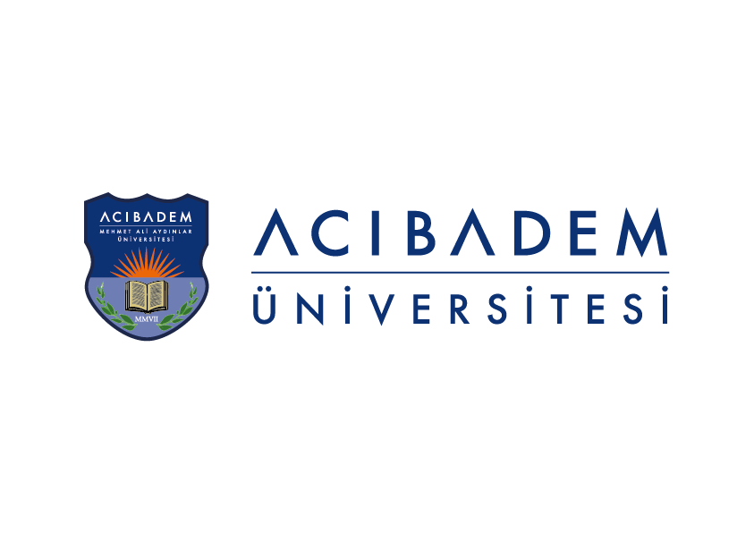
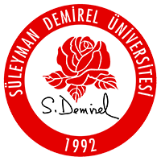
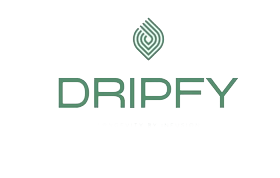
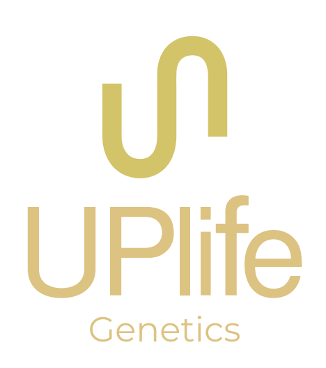
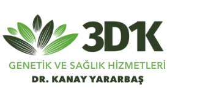

Germline

Acıbadem Mehmet Ali Aydınlar Üniversitesi · ACURARE- Marmara Üniversitesi
- Ege Üniversitesi
- Ümraniye Eğitim ve Araştırma Hastanesi
 İstanbul Üniversitesi · Aziz Sancar Deneysel Tıp Araştırma Enstitüsü (DETAE)
İstanbul Üniversitesi · Aziz Sancar Deneysel Tıp Araştırma Enstitüsü (DETAE)
References
Our references across clinical genomics and longevity, followed by selected scientific publications using Gennext.
OUR REFERENCES

Acıbadem Mehmet Ali Aydınlar Üniversitesi · ACURAREİstanbul Üniversitesi · Aziz Sancar Deneysel Tıp Araştırma Enstitüsü (DETAE) İstgen Genetik Hastalıklar Değerlendirme Merkezi
İstgen Genetik Hastalıklar Değerlendirme Merkezi
Süleyman Demirel Üniversitesi · Tıbbi Patoloji RootWell
RootWell AlbertHealth
AlbertHealth
Dripfy
UPlife
3D1KSCIENTIFIC PUBLICATIONS
Selected studies using Gennext. Publication details and original sources are provided below.
Guner Yilmaz B, Akgun-Dogan O, Ozdemir O, et al. Rapid genome sequencing for critically ill infants: an inaugural pilot study from Turkey. Front Pediatr. 2024;12:1412880.
doi: 10.3389/fped.2024.1412880Onder G, Ozdemir O, Taylan F, et al. Genetic heterogeneity in childhood leukemia/lymphoma: a Turkish cohort with strong predisposition. Front Genet. 2025;16:1624306.
doi: 10.3389/fgene.2025.1624306Yigit A, Akgun-Dogan O, Ozkeserli Z, et al. Unmasking genetic etiologies in neurodevelopmental disorders characterized by Cerebral Palsy: insights from integrative genomic approaches. Front Neurol. 2026;17:1742186.
doi: 10.3389/fneur.2026.1742186Yigit A, Pekerbas M, Salman B, et al. Integrative and systematic genomic approaches to improve diagnosis in rare and undiagnosed diseases: results from the RareBoost project. Eur J Hum Genet. 2026. Published online July 9.
doi: 10.1038/s41431-026-02177-9Akgun-Dogan O, Ozdemir O, Ozkose-Iyigel GS, et al. Undiagnosed Diseases Program-Istanbul (UDP-IST): Diagnostic Impact of Systematic Genomic Reanalysis with Deep Phenotyping in 121 Patients. Research Square [Preprint]. 2026. Posted May 11.
doi: 10.21203/rs.3.rs-8842818/v1Önder G, Amanvermez U, Canpolat C, et al. Determining molecular background of a group of childhood leukemia/lymphoma patients with positive family history from Türkiye. HemaSphere. 2023;7(Suppl):e5926107. Abstract PB2401.
View publicationErgun B, Turan HA, Aydın E, Özdemir Ö. GenNext: Next-Generation Analysis Platform for Next-Generation Sequencing Data. TÜSEB Dergisi. 2024;7(Suppl-1):33-34. Abstract.
View publicationEmail us about your software, infrastructure or education needs. Include your phone number and we’ll call you.